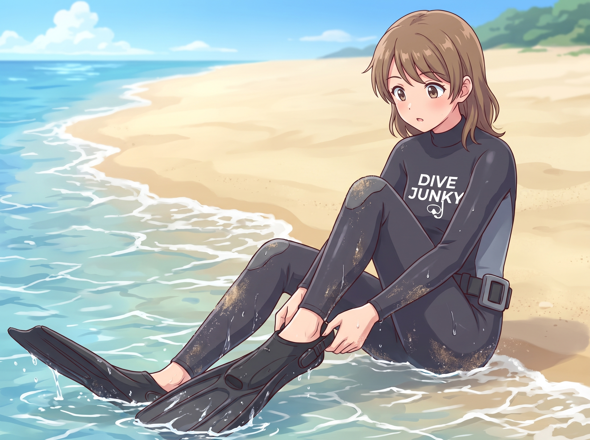
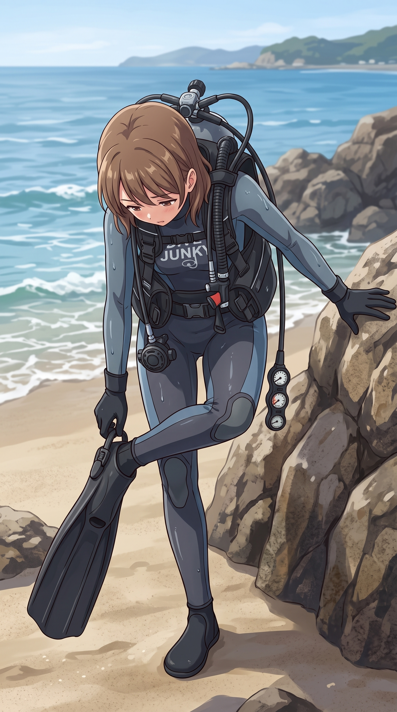
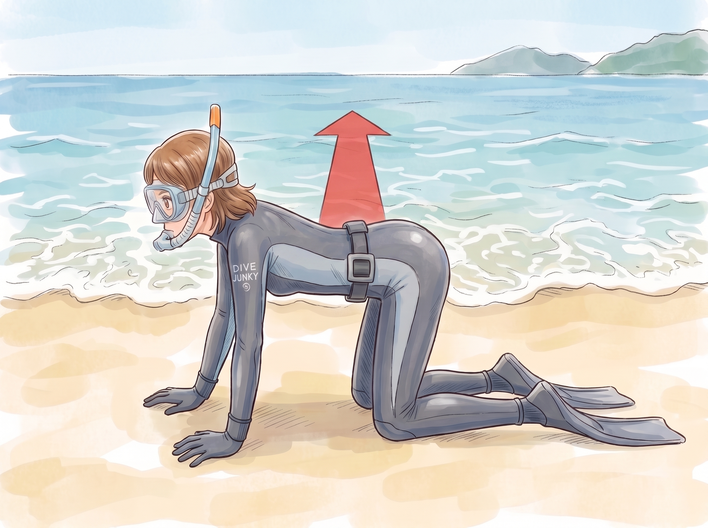

：
| EAN : | % |
| PO2 : | |
| MOD : | |
| ERD : |
：
Used Diving Computer
PD
PD+
(a)MDT
(a)MDT
D
| STOP | |
| ANT | |
| ADT | |
| TNT |
| Name | Age | Gender | Bar. | SAC | Note | |
|---|---|---|---|---|---|---|
| Start | End | |||||
| 藤原巧巳さん | male | 指導インストラクター NAUI #62180 | ||||
昨年 2025/09/10 の備前も悲惨でしたけれど、今日はそれにも増して悲惨でした。もう自分はダイビングなんてしないほうがいいんじゃないか、と思いながら家で一人でボロボロ泣くくらいに。
どう悲惨だったかは下にまとめていきます。
また今後の知見とするために、整理しながら進めていますので、一通り埋まるまでしばらくお待ち下さい。以下の構成も変更される可能性もありますが、このような感じでまとめようと考えています。
以下の不利な条件があったのだから Open Water の受講生のように１つずつ丁寧に問題を潰していくべきだった。
以下の想定できていなかった事態や誤算があった。また保留されていた理解も明確化された。
まず機材全般について述べる。今回のトレーニングではマスクとスノーケルを除く全機材が新規導入機材であり、Open Water コースの受講生のように、1 つのテーマを１つずつ確実に丁寧にチェックしながら行うべきであったと言える。
自分の体型を満たす長さのウエイトベルトがサービスになかった。体にあうウェイトベルトがないことが、後に記述するエントリー困難の誘引となる。
自分の現在の体型を考えてマイウェイトベルトくらい用意すべきである。さらに場合によってはウェイトベストの併用を考える。
なお現場では BCD にある程度のウエイト収納力があるため、BCD にウエイトをすべて装着するというワークアラウンドが選ばれたが、この時点で浮力調整を再習得するための前提条件が崩れていたため、当日のトレーニングの中止、延期も考慮すべきであった。
条件が悪い状態でトレーニングを強行してもよい結果は得られない。結果が得られないだけでなく、知見がなにも得られない。トレーニングを延期すべきであった。
新規購入した BCD への理解が不足していた。それが後に記述する浮力調整の困難性へと発展する。
ロクハンの浮力に対する理解が圧倒的に足りなかった。少なくともドライスーツ並の最低限のウェイト量は必要。
ビーチの砂は体重がかかった途端に崩れるということはわかってはいたものの、身体感覚としてどうなのかという理解や想定が不足しすぎていた。
硬い床や道などでも片足で立つのは無理なのだから、たとえ捕まるところがあっても、砂のビーチでは陸上、水中を問わず、片足で立つのは不可能だと理解しておく必要があった。
試さないとわからない、わからないから試す、という前提ではいたが、不安定な足元では立脚は成立しないことが明らかになった。
今後は砂のビーチで立脚した状態での一切の作業は行わない前提とする。

自分の体型を満たす長さのウエイトベルトがサービスになかったことにより、ロクハンの浮力を打ち消すものが一切ないこと、協調運動障害のために姿勢維持の困難であること、それらのために水際での座位を考えていたものの、それが不可能だったこと。それにより 1 時間半もフィンを履けない事態が発生した。
図のような普通に座ってフィンを履くということができなかった。ウェイトは陸上から必須。
もちろん片足立ちで、片方の手でなにかに捕まってフィンを履くのも不可能だった。
エントリーが最初の難所になることははっきりしていた。身体上の条件があるのでさっきの図のようにビーチに腰掛けてフィンを履く、マスクもスノーケルも装着する、という想定でいた。でもこの方法はうまく行かなかった。理由は以下の通り。
ウェイトベルトのサイズがなく、ノンウェイトだった。
波は概ね穏やかだったが、海なので、ある程度の周期で大きめの波が必ずくる。
この大きめの波は当日波高 50cm くらいだったのだけれど、前述の理由でウェイトベルトをしておらず、ロクハンという浮力がとてもあるスーツを着ていたこともあり、体が浮いてしまい、体幹機能障害、協調運動障害もあることから、座位を維持できなかった。
それによりゴロンゴロンと転がるばかりでフィンを履くどころではなかった。

指導インストラクターの指示により、Open Water で学ぶ通りのフィンの履き方も試してみるが、これもうまく行かない。
まず前提として体幹機能障害、協調運動障害が軽度とはいえあるので、普通の日常生活で片足で立てない。
またビーチでは波が来たり、あるいは水中なので、足元の砂がどんどんと崩れる。片足で立つのは岩に掴まっても不可能だった。
さらに図ではフィンを履いているのは陸上だが、実際には腰付近まで水に浸かっている。やはり波があるので安定せずに転倒する。
Open Water のマニュアル通りだとエントリー自体が成立しないことがはっきりとした。
以上のことからエントリーのフィン装着方法の最有力候補は今のところ、やはり座位ということになる。一番姿勢を安定できる可能性が強い方法を選択するしかなさそうである。
とはいえ、座位もロクハンの浮力、ウェイトなし、ときより寄せる大きめの波によりどうしても不安定になる。
それを考えるとあらかじめウェイトを装着して、座位でフィンを履くのが現実的かも知れない。
ただし懸念点はやはりあって、体幹機能障害、協調運動障害、そして時折やってくる大きめの波で、ウェイトをした座位のまま転倒してしまう可能性は否定できず、安全を高める要素として、体を支えるラダーのポールのような構造物があると、少しはリスクが減る可能性も考えられる。
問題はそのコストを誰が負担するのか、という点もあるが、そもそも実現性自体が不明である。

もう一つ、対策を思いついた。水際でフィンを履かない。波の届かないところでマスク、フィン、スノーケルを装着し、四つん這いで横向きにエントリーしていく。もしかするとこれが一番安全で現実的かもしれない。
またもしかすると重機材も背負った状態で、四つん這いならエントリー可能かも知れない。
でもどちらにせよやはり検証が必要で実現可能性は確かめなければならない。
それにもっと安全で効率的な方法があるかもしれない。
とにかく砂地は岩場と違って安定した状況は一切ないので、体を安定させながらエントリーする方法の開発が欠かせない。
絵に描いた餅はいらない。